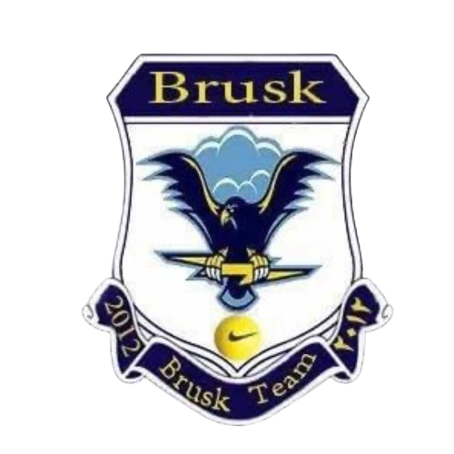

دەربارە
سەرەکی
پەیوەندیکردن
تیم
ڤیدیۆ
دەربارە
: دەربارەی تیپ
تیپی وەرزشی {بروسک} لە ساڵی {٢٠١٢} لە سەر دەستی ( کاروان باپیر ناسراو بە مەلا کاروان ) دروست بووە سەر بە لیژنەی تیپە میلییەکانی پیرەمەگروون و لیژنەی باڵای تیپە میلیەکانی سلێمانیە سەرەتا یەک قۆناغی هەبوو لە پلە یەکی پیرەمەگروون دواتر توانی سەر بکەوێت بۆ پلە نایابەکانی پیرەمەگروون دواتر لە ساڵی{٢٠١٥} قۆناغێکی تری بۆ لاوان دروست کرد بە ناوی تیپی وەرزشی ( لاوانی بروسک ) تیپی وەرزشی بروسک یەکێکە لە تیپە نایابەکانی پیرەمەگروون کە چەندان یاریزانی باشی پێگەیاندووە ئێستا لە یانە گەورەکانی کوردستان یاری ئەکەن و ئاستێکی باش پێشکەش بە یانەکانیان ئەکەن
: ئامانجی تیپ
ئامانجمان بەرەو پێشچونی وەرزشە بە گشتی لە کوردستان وە بە تایبەتی لە ناوچەکەمان وە هەروەها ئامانجمان بە دەست هێنانی نازناوی زیاترە لەوەی بەدەستمان هێناوە و وە ئەو خولانەی کە بەشدار ئەبین تیایاندا ئامانجمان بوون بە پاڵەوانی خولەکانە
تیپی وەرزشی بروسک
ناونیشان: پیرەمەگروون - یاریگای پیرەمەگروون